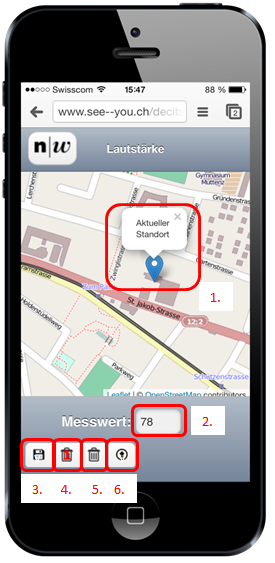

Diese Webanwenung dient dazu Lärmwerte zu erfassen und sie auf einer Karte darzustellen.
Diese Hilfeseite soll Ihnen einen Überblick über die Funktionalitäten der Erfassungswebseite geben.
Position: Sofern ihr Gerät die Lokalisierung zulässt, wird der Erfassungsmarker an Ihrer aktuellen Position angezeigt.
Durch berühren der Karte an der gewünschten Stelle können Sie die Position des Markers anpassen.
Der Dezibelmesswert wird bei der Speicherung zu der Position des Markers abgespeichert.
Messwert: Sie können den gemessen Wert im Textfeld [2.] eintragen.
Der Wertebereich für die Messwerte ist von 20-120 dB beschränkt.
Speichern: Die Werte werden in zwei Stufen gespeichert. Zuerst werden sie mit der Schaltfläche "Speichern" [3.]
in den lokalen Speicher gespeichert. Mit der Schaltfläche "Upload" [6.] werden alle Werte vom lokalen Speicher
in die Datenbank gespeichert. Diese Methode hat den Vorteil, dass auch Messwerte ohne mobile
Datenverbindung erfasst werden können. Dazu muss der Upload einfach erst bei vorhandener Datenverbindung ausgeführt werden.
Löschen: Die Schaltfläche "Löschen 1" [4.] löscht den zuletzt zum lokalen Speicher hinzugefügten Messwert.
Die Schaltfläche "Löschen" [5.] löscht den kompletten Inhalt des lokalen Speichers.

Kontakt: Für weitere Informationen zum Projekt kontaktieren Sie uns via Kontakt
oder melden Sie sich direkt beim Projektverantwortlichen Prof. Hans-Jörg Stark (hansjoerg.stark@fhnw.ch)